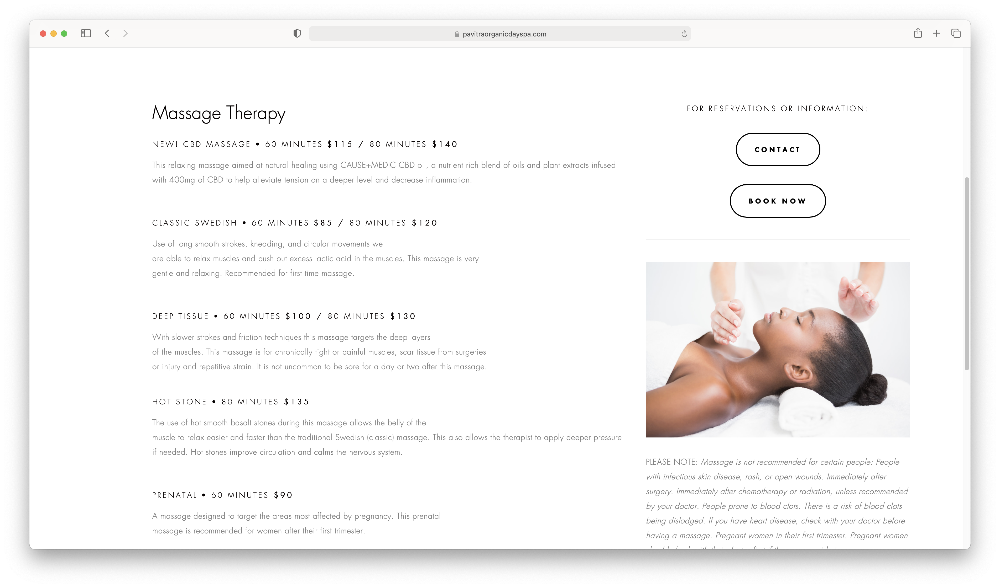
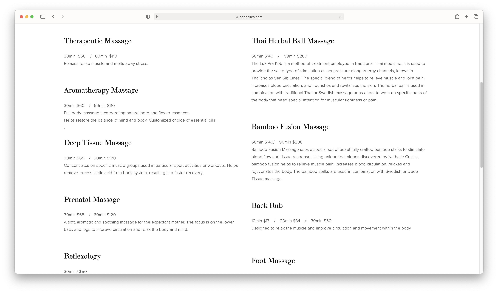
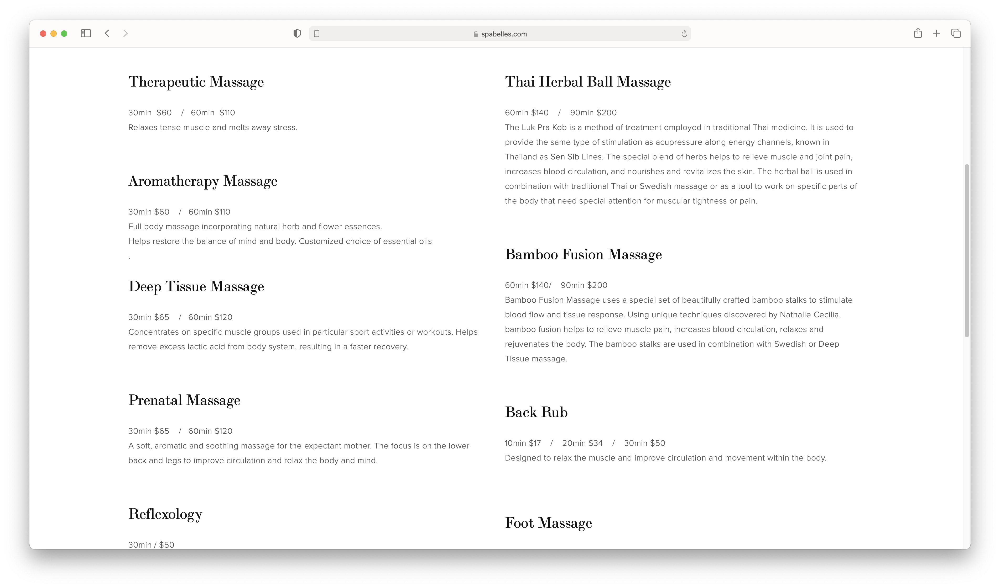
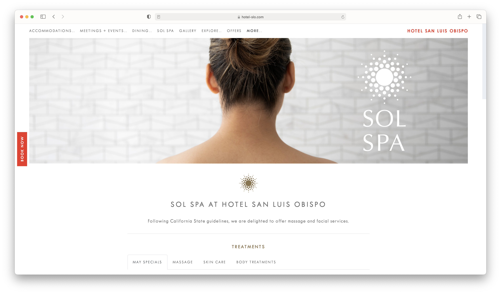
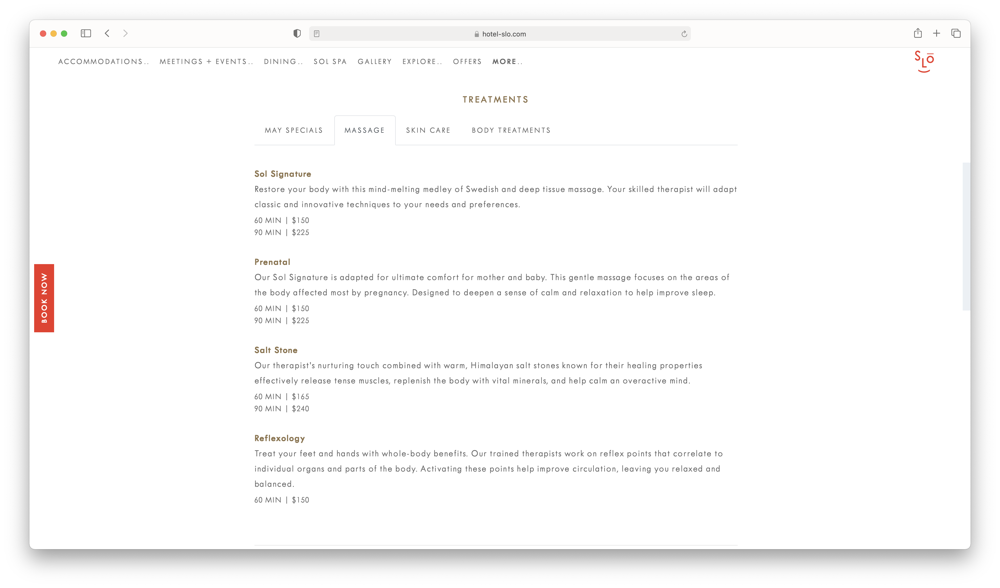

Final Project Proposal
Introduction
SLO Organic Day Spa
SLO Organic Day Spa is a 100% organic spa using all natural products in the heart of San Luis Obispo. They specialize in massages, facials, and other body treatments.
Target audience
The people who come to this site are looking for a luxury, natrual, self care treatment. They are doing so for a special occasion or as a break from their everyday routine and stressors.
They want to book an appointment for a treatment offered by the spa and learn what we offer, where we are located, and maybe even about the spa itself.
Comparative analysis
Pavitra Organic Day Spa

Spa Belles
 

Sol Spa
 Website content
Home
Escape the daily grind and come experience the peaceful tranquility of SLO Organic Day Spa. Our mission is to provide extraordinary and memorable experiences that exceed expectations using only the finest all natural, organic, and eco-friendly products. Choose from a variety of spa services including facials, massage therapy, and body treatments.
[Picture of spa lobby]
Our Story
Located in San Luis Obispo’s beautiful, historic downtown, SLO Organic Day Spa is a unique and eco-friendly boutique spa with a modern touch, infused with the cool, calm ambiance of the Central Coast. We specialize in 100% natural beauty and pure relaxation using all natural, organic products. At SLO Organic Day Spa, you can always expect a relaxing experience to help you naturally look and feel your best. Choose from a variety of organic spa treatments including facials, massage therapy, and body treatments.
[Ocean landscape photo]
Location
We are located in the heart of San Luis Obispo, on California's central coast. Our hours are Monday - Saturday 8AM to 5PM and you can find us at 111 Higuera Street, San Luis Obispo, CA 93401.
[Spa treatment room]
Menu
We provide a wide variety of treatments including: facials, massages, and other body treatments.
- CLASSIC SWEDISH • 60 MINUTES $85 / 80 MINUTES $120 Use of long smooth strokes, kneading, and circular movements we are able to relax muscles and push out excess lactic acid in the muscles. This massage is very gentle and relaxing. Recommended for first time massage.
- DEEP TISSUE • 60 MINUTES $100 / 80 MINUTES $130 With slower strokes and friction techniques this massage targets the deep layers of the muscles. This massage is for chronically tight or painful muscles, scar tissue from surgeries or injury and repetitive strain. It is not uncommon to be sore for a day or two after this massage.
- HOT STONE • 80 MINUTES $135 The use of hot smooth basalt stones during this massage allows the belly of the muscle to relax easier and faster than the traditional Swedish (classic) massage. This also allows the therapist to apply deeper pressure if needed. Hot stones improve circulation and calms the nervous system.
- CLASSIC BEAUTY • 60 MINUTES $85 A complete facial that will restore the look of healthy glowing skin. Designed for all skin types, this treatment includes cleansing, exfoliation, extractions, custom mask and hydration.
- GREEN APPLE ENZYME PEEL • 60 MINUTES $120 Eliminate the appearance of fine lines and wrinkles while firming the skin using Juice Beauty’s organic Green Apple Enzyme collection.
- DEEP BREATH • 45 MINUTES $60 Using certified organic skincare, this facial detoxifies and replenishes. Perfect for those not a fan of extractions.
- ORGANIC BODY POLISH + HYDRATING WRAP • 80 MINUTES $125 This experience begins with dry brushing and continues with a luxurious lavender shea butter body polish. Your body is then drenched with organic oils and wrapped in a cocoon to encourage absorption and hydration.
- ORGANIC BODY POLISH • 45 MINUTES $85 This exfoliating treatment combines dry bushing with an organic exfoliant to sluff away dry, dead, skin cells while smoothing and toning the skin.
Massages
Facials
Body Treamtments
[Woman receiving a spa treatment.]